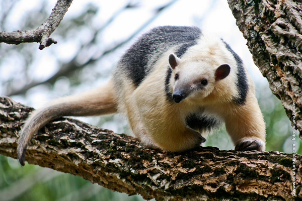
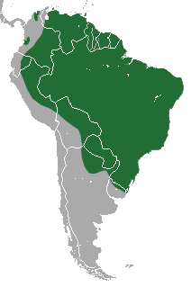

Tamanduá mirim
Nome científico: (Tamandua tetradactyla Linnaeus, 1758)
Nome comum: Tamanduá mirim, tamanduá de colete.
Classificação biológica:
Domínio: Eukaryota.
Reino: Animalia.
Filo: Chordata.
Classe: Mammalia.
Ordem: Pilosa.
Família: Myrmecophagidae.
Gênero: Tamandua.
Espécie: Tamandua tetradactyla.
Nutrição: Insetívoro.
Hábitos alimentares: Alimenta-se de formigas, cupins e abelhas, utilizando sua língua longa e pegajosa para capturá-los.
Morfologia do corpo: Possui corpo compacto, cauda preênsil e pelagem amarelada com um padrão preto em forma de colete. Mede cerca de 90 cm a 1,2 metro de comprimento e pesa entre 3 e 7 kg.
Comportamento: É um animal solitário e arborícola, passando parte do tempo nas árvores. Pode se defender utilizando suas fortes garras dianteiras.
Principais Alimentos: Formigas, cupins e abelhas.
Principais Predadores: Onças, pumas, gaviões e humanos (desmatamento e caça ilegal).
Locais habitados
Distribuição:Bioma Amazônia, Cerrado, Mata Atlântica, Pantanal e Caatinga.
Habitat: Habita florestas tropicais, cerrados, campos e áreas alagadas.
Reprodução: A gestação dura cerca de 130 a 150 dias, resultando em um único filhote, que se agarra às costas da mãe durante os primeiros meses de vida.